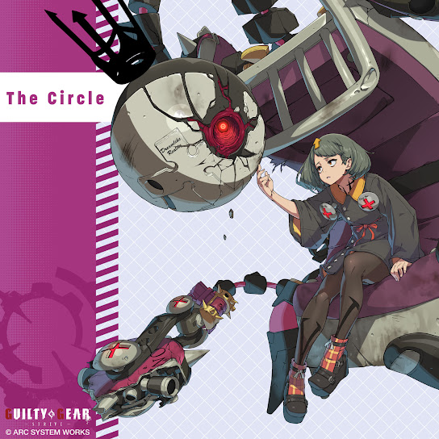
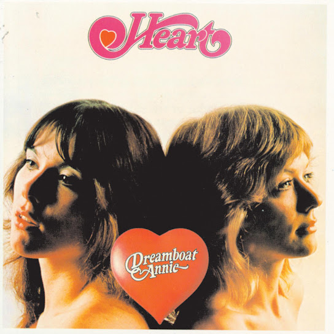
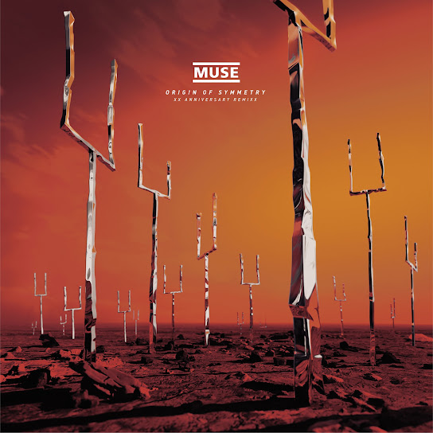
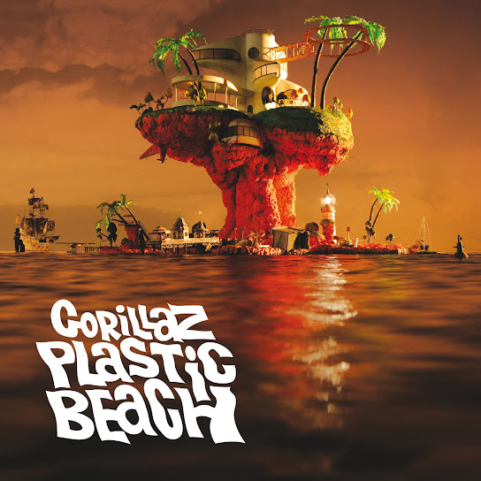
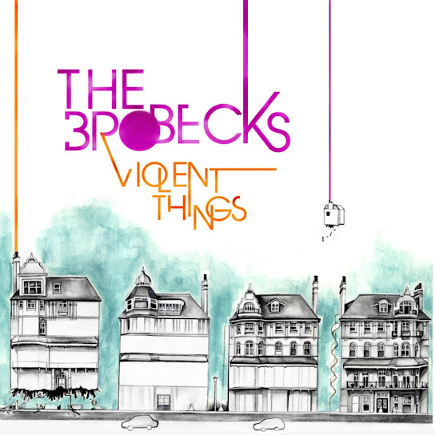

Hello There
Meu nome é petris, eu gosto de música. Então, que tal a gente ver algumas das minhas músicas
favoritas?(em nenhuma ordem específica)
1- NAOKI e Arc System Works-The Circle

Servindo como música tema para o personagem Bedman de Guilty Gear Strive, "The Circle"
é uma viagem
completa para amantes de música, principalmente hard rocke outras músicas que eu defino como
"poderosas".
2- Heart-Crazy on you

Crazy on you é uma das minhas músicas favoritas simplesmente porque além de ser MUITO boa (obviamente),
é
uma
música
que está presente na seleção do Guitar Hero 2, e como eu amo GH faz sentido eu gostar dela bastante.
3- Muse-Futurism

Conheci Muse por causa do guitar hero, com a música "Knights of Cydonia" e quando eu ouvi suas outras
músicas e eu não pude deixar de ficar apaixonado pelo estilo sonoro da banda. Futurism é uma música que
você
escuta e consegue imaginar um cenário para ela, um futuro distópico com máquinas no comando em que
ninguém pode escapar.
4- Gorillaz-Empire Ants (com Little Dragon)

Gorillaz é defiitivamente a minha banda favorita de todos os tempos, além dessa músicas, existem
diversas
pérolas nesse álbum e outros mas essa é pessoalmente mais legal(das músicas mais "animadas")
5- The Brobecks-The Nerve

Descobri The Brobecks não faz muito tempo, porém já considero uma das bandas mais incriveis que
ninguem conhece, também tem muitas outras que são sensacionais como, "Le Velo Pour Deux" ou "Small
Cuts".
Sinceramente não sei se consigo escolher músicas favoritas estou sempre mudando de estilo e artista
então
¯\_(ツ)_/¯